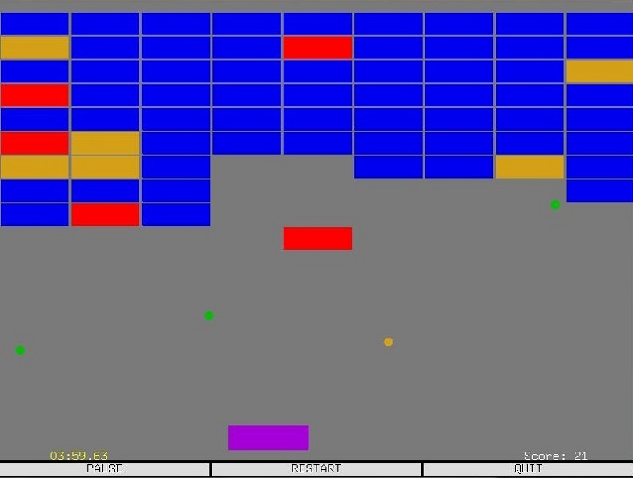
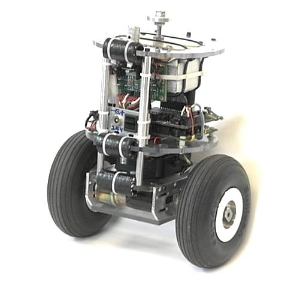
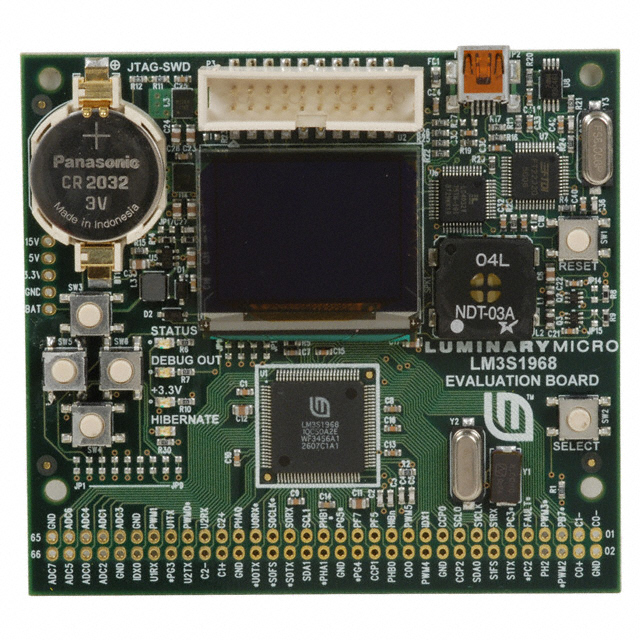
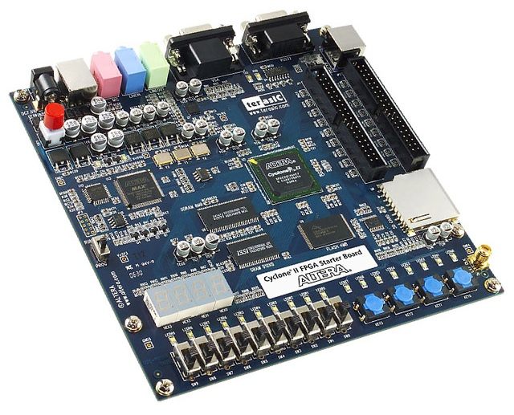
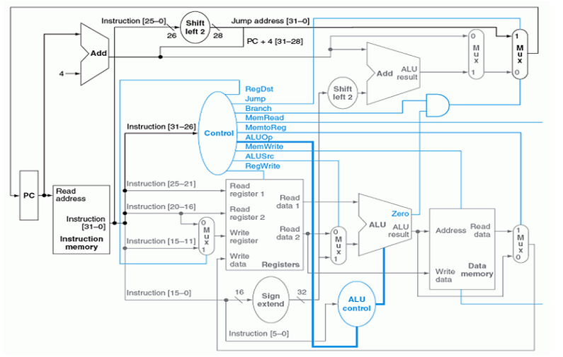

Data Structures

Created the event driven arcade game "Breakout" in C++ in with conjunction OpenGL and GLUT. Displayed output in real-time interactive 2D GUI. Stored all dynamic game objects in respective linked lists. Iterated through all lists at redraw rate of 30 FPS for collision detection.
Download Source Code
Computer Networking
Wrote a multi-threaded program to implement a chat room server and GUI client using Tkinter in Python. Clients were all routed through a central server, which required parallel tasks to communicate with each other. Race conditions were handled with dedicated queues and blocks.
Download Source Code
Senior Project II

Designed an autonomous robot with a team of four engineers. Robot was capable of sensing its environment, and traveling to any user inputted waypoints within a 24,000 ft² building. Motion was implemented with the self-balanced Segway paradigm, and was capable of avoiding any obstacles the robot may encounter during travel.
Download Source Code
Computer Systems and Networks
Wrote a Python script to download an image from a user input URL. Split URL to retrieve host, path, and filename variables. Provided a port variable to connect via HTTP. Download portion was completed by looping; attempt to download file, if failed, repeat loop. Once download was successful, save to hard disk.
Download Source Code
Microcontrollers

Created an MP3 player with another engineer using a Stellaris LM3S1968 microcontroller; implemented using C, ARM, and the Thumb-2 instruction set. The LM3S1968 interfaced with a microSD card, DAC, PS/2 keyboard, LCD, and 3.5 mm headphone jack, in order to play music at a sample rate of 22.05 KHz.
Download Source Code
Advanced Digital Design

Constructed a synchronous, Moore based finite state machine with VHDL and Verilog. The FSM mimicked the drive circuitry for the taillights of a Ford Mustang. Three input signals controlled the operation of the taillights, while the FSM was driven by a clock signal that ran at a frequency equal to the desired flashing rate. Entire module was ported to a Cyclone II FPGA.
Download Source Code
Computer Organization and Architecture

Designed a 32-bit MIPS embedded processor from Boolean logic gates and multiplexers. Processor supported the standard MIPS instruction set including exception handling, supervisor control, and interrupts.
Download Source Code